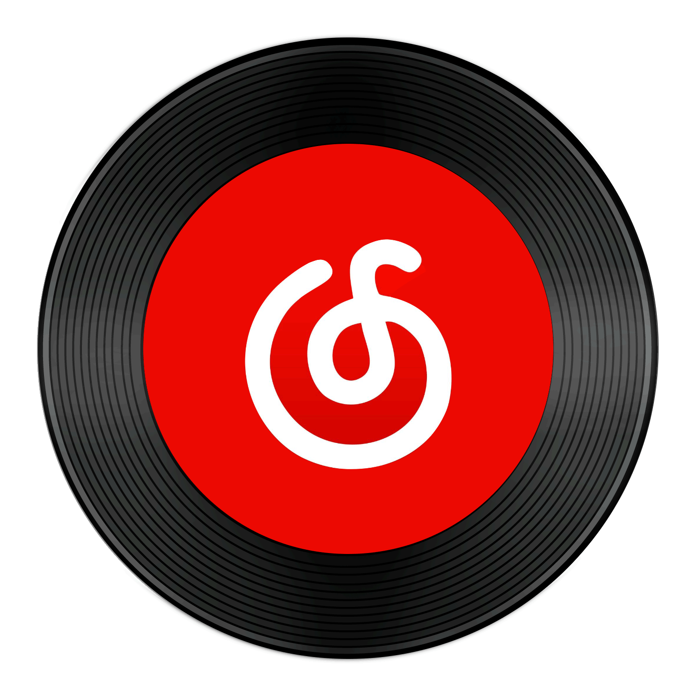
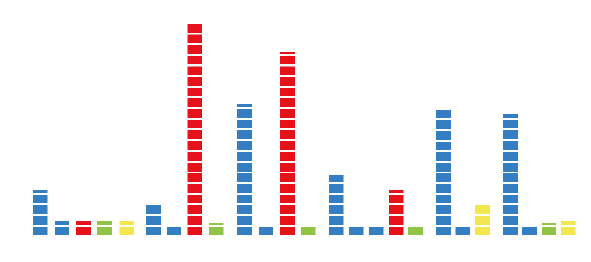
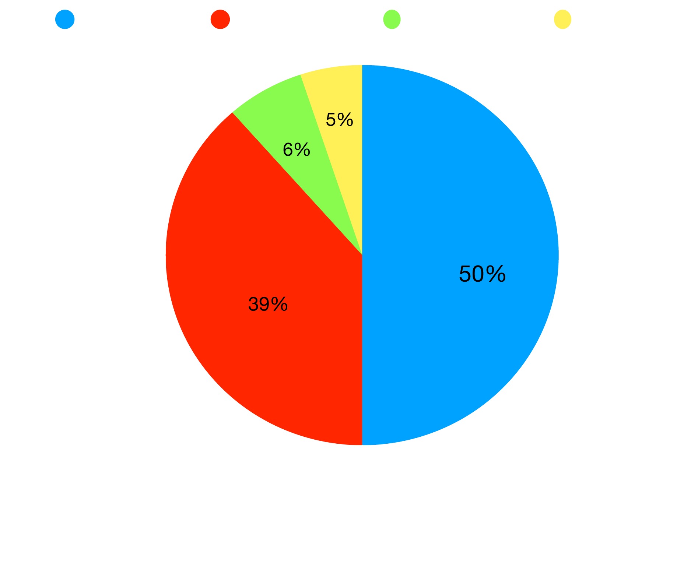

As a person who loves listening to music, I discovered the impact of listening to music by recording some data related to the music. I had recorded for 6 days. The data were the duration of listening to music, the activities I did when I listening, the music genres, and the kinds of feelings I had in the meantime.After finishing the recording, I made the conclusion. I always listen to music among most of my daily activities, which can bring my different energy and emotions. My favorite music genre is New wave and emo rap which make me relaxed. Generally, music has become a crucial part of my life, especially when I feel anxious and depressed. It does bring me a lot of pleasure and enjoyment, which helps me love my life more. I will continue listening to music!



My favorite songs:
爱痕 - TOYOKI / Surfosho
Midsummer Madness
- 88rising / Higher Brothers
Honesty - Pink Sweat$
6.5h
on listening music per day.
Relaxed
is the most frequent emotion when I listening to music.
Lie in bed
is the most frequent activity I do while I listening to music.
The chart shows the proportion of different emotions when I listening to music and doing different daily activities.
The amount of time on listening the music with different daily activies
"Research shows that music can have a beneficial effect on brain chemicals such as dopamine, which is linked to feelings of pleasure, and oxytocin, the so-called 'love hormone.' And there is moderate evidence that music can help lower levels of the stress hormone cortisol.The report also includes findings from the 2020 AARP Music and Brain Health Survey, a nationally representative survey of 3,185 adults that found that listening to music — whether in the background, by focused listening to recordings or at musical performances — had a small positive impact on mental well-being, depression and anxiety."